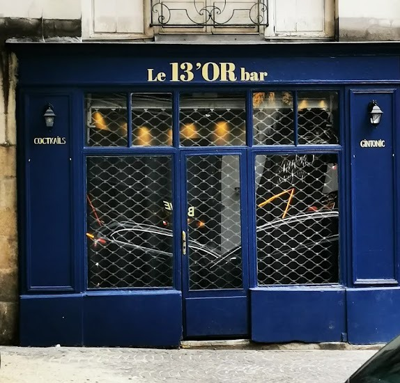

Bar à cocktails — Nantes
Le 13'OR
Cocktails faits au comptoir, dix-sept gins au tonic, et des soirées qui finissent sur les pavés de la rue des Carmélites.

Ouvert depuis juillet 2025
Le comptoir fait ses gammes
Le 13'OR tient dans une salle étroite et un comptoir, à l'angle de la rue des Carmélites. La carte tient sur trois volets : les classiques d'un côté, le gin de l'autre.
Les cocktails sont préparés à la commande. Plusieurs bases sont faites sur place : le gin infusé au basilic du Basil Smash, le bissap qui sert aussi bien au smash qu'à la boisson maison, les poivrons rouges infusés dans la tequila de la Red Margarita.
Trois lignes de la carte sont imprimées sans prix — cocktail du moment, rouge du moment, mocktail du moment. Elles changent selon ce qu'il y a derrière le comptoir. Le reste se demande.
Huit mocktails figurent sur la même carte, dont un Negroni, un Américano et une Paloma sans alcool, préparés avec le même soin que les autres.
Extraits
La carte,
en trois lignes
Les classiques
18 références- Old Fashioned9,00 €
- Red Margarita8,50 €Poivrons rouges infusés à la tequila
- Expresso Martini by 13'OR8,50 €
- Sour7,50 €Alcool au choix (whisky, pisco…)
- Zombie Club9,00 €
Au gin
11 références- Basil Smash8,50 €Gin infusé au basilic, sureau, citron, douceur
- Bissap Smash8,50 €
- Negroni8,50 €Gin du moment, Campari, vermouth rouge
- French 759,00 €
- Clover Club7,50 €
Sans alcool
8 mocktails- Negroni 0 %6,50 €
- Paloma 0 %6,50 €
- Virgin Garden 13'Or6,50 €
- Fresh Connexion5,00 €
- Bissap maison4,50 €
Tarifs relevés sur la carte imprimée le 29 juillet 2026. [TARIFS À CONFIRMER]
Gintonic — peint sur le pilastre droit
Dix-sept gins,
un tonic
C'est le seul mot que le bar a fait peindre à côté de son nom. Du dry classique aux distillats japonais, français et nantais — l'Immortel de la distillerie Vrignaud, en Vendée, y côtoie le Roku et le Gin Mare.
- Classique Dry7,50 €
- Meridor9,00 €
- Christian Drouin9,00 €
- O'live9,00 €
- Sorgin Rosé8,00 €
- The Botanist9,00 €
- G'Vine8,50 €
- Citadelle France8,50 €
- Roku, Japon8,50 €
- Generous Gin9,00 €
- Gin Mare9,00 €
- Immortel Vrignaud8,50 €
- Hendrick's9,00 €
- Birdie Shiso9,50 €
- Blossom peach8,50 €
- Akori8,50 €
- Aki9,00 €
Open-art
Le comptoir, puis la rue
Le 13'OR se présente comme un bar évent. Les soirées sortent régulièrement de la salle : sets de DJ, sessions acoustiques au coucher du soleil, scène montée sur les pavés de la rue des Carmélites.
En mai 2026, Rébecca y a chanté devant la devanture. Le 21 juin, cinq artistes se sont relayés jusqu'à une heure du matin pour la fête de la musique. Le 25 juillet 2026, le bar a fêté sa première année avec Chilly Jay aux platines.
13'ORParty
Fête de la musique — 21 juin 2026
- 20h00Majam
- 21h00Dors-Rêve +
- 22h30Boun
- 23h15Hathara
- —Chilly Jay
Affiche reprise de la programmation annoncée par le bar.
Rue des Carmélites
À cent mètres des douves
La rue descend du Bouffay vers le château des Ducs de Bretagne. Le 13'OR occupe le numéro 2 : une devanture de bois peinte en bleu roi, deux lanternes noires, des grilles losangées, et le nom passé à la feuille d'or sur le bandeau.
Aux beaux jours, les tables débordent sur les pavés. C'est aussi là que se montent les scènes quand la soirée sort du bar.
La fresque
L'intérieur — le couloir, les sanitaires — est couvert d'entrelacs bleus et dorés peints à la main. C'est ce motif qui a donné au site sa matière. [PHOTOS HD DE LA FRESQUE À FOURNIR]
Nous trouver
Ouvert jusqu'à 2h
- LundiFermé
- Mardi15h – 2h
- Mercredi15h – 2h
- Jeudi15h – 2h
- Vendredi15h – 2h
- Samedi15h – 2h
- Dimanche15h – 2h
Horaires annoncés par l'établissement. [HORAIRES À CONFIRMER]
- Adresse
- 2 rue des Carmélites
44000 Nantes - Écrire
-
bar.13or@outlook.fr
Réservations, privatisations, propositions artistiques. - Téléphone
- [TÉLÉPHONE À COMPLÉTER]
- Suivre
- @13or.bar
2 rue des Carmélites, Nantes
La carte est fournie par Google Maps. En l'affichant, vous acceptez que Google dépose des cookies et collecte des données de navigation.
Ou ouvrir dans Google MapsLa carte Google Maps ne se charge qu'après votre clic — aucun traceur n'est déposé avant. Le lien « Itinéraire » ouvre Google Maps dans un nouvel onglet.